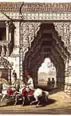

Welcome To Surendranagar....

Wadhwan
City
Surendranagar district takes its name from its headquarters Surendranagar. Originally it was the place where the British political agent for Wadhwan lived and became known as Wadhwan Camp. After the agent left in 1946, Wadhwan Camp was renamed after Surendrasinhji Jorawarsinhji, then-ruler of Wadhwan, and became known as Surendranagar. Even today the city is still called the 'Camp' locally from its old name.The district overall, when the various princely states had been merged, was known as 'Zalavad', the land of the Jhala Rajputs, who held many of the states. Their name derives from an apocryphal incident in the palace of Harpaldev, their ancestor. A wild elephant had burst into a courtyard where his children were playing, but their mother managed to fend off the elephant and rescue the children. As she held them, they received the name 'Jhala' (or Zala) from the Gujarati word Jhalavun.
Several small-scale archaeological expeditions in the district have found only a few traces of prehistoric man. Tools from the Late Stone Age were found in Sejakpur in Sayla taluk in 1957-58. Near Rangpur in 1931 was found a Harappan site, the first Harappan site found in Gujarat and evidence that the Indus Valley civilization extended to Saurasthra. In fact, Rangpur was the first site found that lasted longer than the Harappan civilization itself. However, it seems Rangpur was not a major commercial centre since no seals were found here.[1]
The early history of this district is unclear, but most likely follows the same pattern as the other districts of Saurashtra. The district was probably ruled by the Mauryas, then Indo-Greeks. Afterwards it was ruled by the Western Satraps, and then by the Gurjara-Pratiharas. Eventually the Chaulukyas took over, and after they were destroyed by the Delhi Sultanate, it became part of their empire. In 1407, the governors of Gujarat declared their independence, and Surendranagar became part of the Gujarat Sultanate. After 1573, Gujarat was annexed into the Mughal Empire and Surendranagar became part of the Gujarat Subah. However on the group control of the district rested with numerous kings and landlords with estates of various sizes, and this continued until the British period.There were several states in the district during the British period: states such as Dhrangadhra, Wadhwan, and Limbdi were ruled by the Zala Rajputs, formerly known as Makwanas. They claim descent from Harpaldev, son of Kesar Makwana whose wife was daughter of celebrated Chaulukya ruler Karan Ghelo. Harpaldev received 1800 villages from Karan Ghelo for his valour.The state of Bajana was founded by Malik Haider Khan, a Jat leader driven out of Sindh who was given land by the Gujarat sultans. Dasada was ruled by Multani Maliks descended from a Thanedar during the reign of Ahmad Shah.
Famous Places in Surendranagar City
- Chotila Hill
- Dholidhaja Dam
- Trineteshwar Temple
- Sayla
- Wadhwan
- Muli Village
- Zharia Mahadev
- Dhrangadhra
Surendranagar City Famous Food Item
- Khasta Bhel Kachori
- Dabeli
- Sev Mamra
- Spe. Green Bhel
- Pav Bhaji
- Pulao
- Spe. Lassi Gola
© Copyright Reserved
Go To Main Page